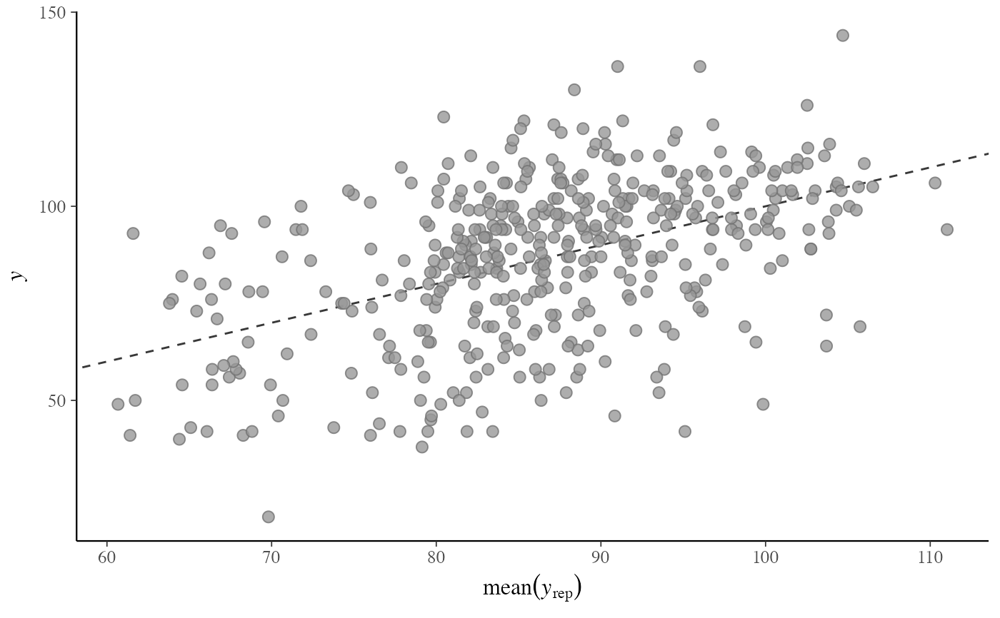
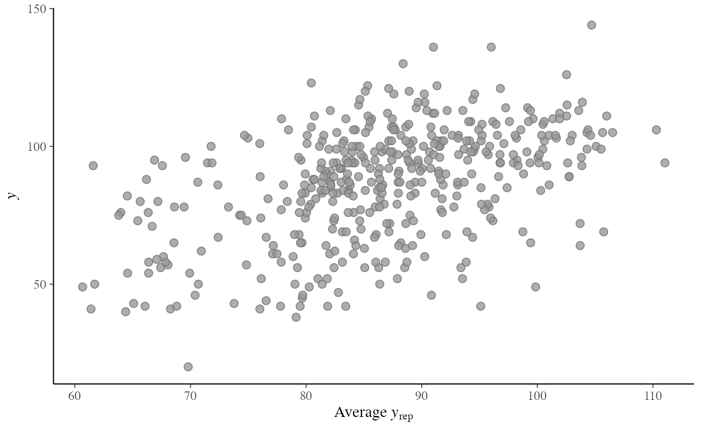
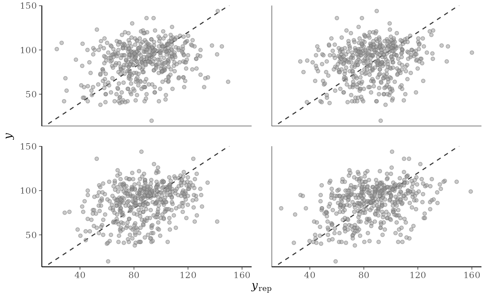
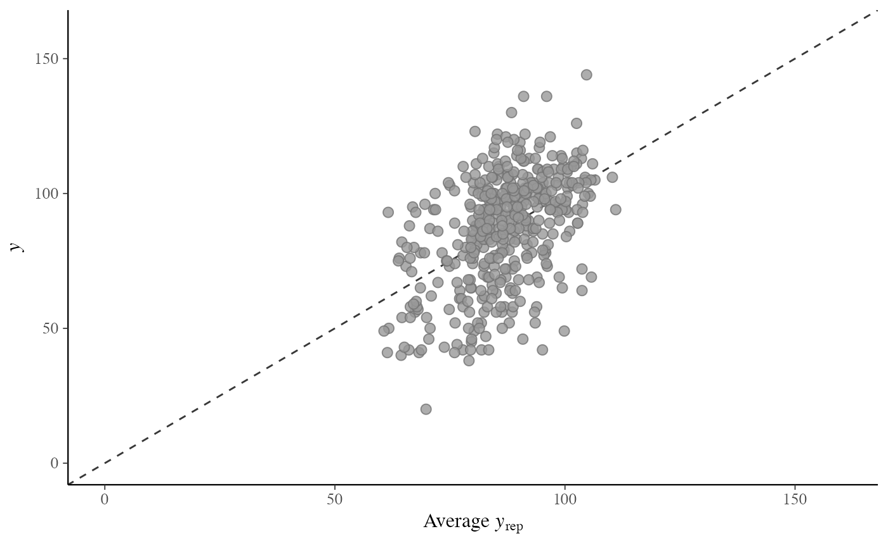
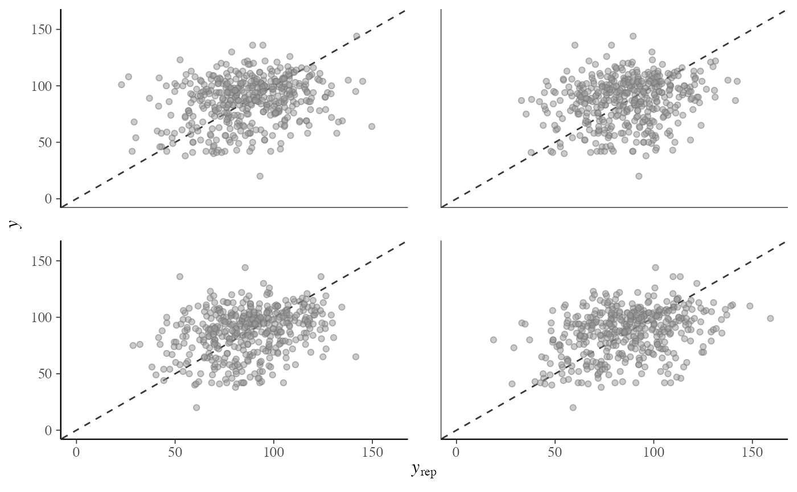

PPC-scatterplots.RdScatterplots of the observed data y vs. simulated/replicated data
yrep from the posterior predictive distribution. See the
Plot Descriptions and Details sections, below.
ppc_scatter(y, yrep, ..., size = 2.5, alpha = 0.8) ppc_scatter_avg(y, yrep, ..., size = 2.5, alpha = 0.8) ppc_scatter_avg_grouped(y, yrep, group, ..., size = 2.5, alpha = 0.8)
| y | A vector of observations. See Details. |
|---|---|
| yrep | An \(S\) by \(N\) matrix of draws from the posterior
predictive distribution, where \(S\) is the size of the posterior sample
(or subset of the posterior sample used to generate |
| ... | Currently unused. |
| size, alpha | Arguments passed to |
| group | A grouping variable (a vector or factor) the same length as
|
A ggplot object that can be further customized using the ggplot2 package.
For Binomial data, the plots will typically be most useful if
y and yrep contain the "success" proportions (not discrete
"success" or "failure" counts).
ppc_scatter()For each dataset (row) in yrep a scatterplot is generated showing y
against that row of yrep. For this plot yrep should only contain a
small number of rows.
ppc_scatter_avg()A scatterplot of y against the average values of yrep, i.e.,
the points (mean(yrep[, n]), y[n]), where each yrep[, n] is
a vector of length equal to the number of posterior draws.
ppc_scatter_avg_grouped()The same as ppc_scatter_avg(), but a separate plot is generated for
each level of a grouping variable.
Gelman, A., Carlin, J. B., Stern, H. S., Dunson, D. B., Vehtari, A., and Rubin, D. B. (2013). Bayesian Data Analysis. Chapman & Hall/CRC Press, London, third edition. (Ch. 6)
Other PPCs: PPC-discrete,
PPC-distributions,
PPC-errors, PPC-intervals,
PPC-loo, PPC-overview,
PPC-test-statistics
p2 <- ppc_scatter(y, yrep[20:23, ], alpha = 0.5, size = 1.5) p2p2 + lims#> Warning: Removed 1 rows containing missing values (geom_point).